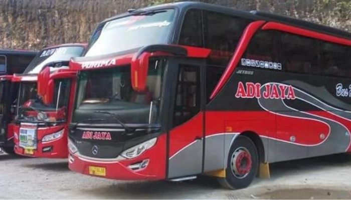

Tips Memilih Sewa Bus Pariwisata Di Bali Agar Aman & Nyaman
Tips memilih sewa bus pariwisata kali ini admin bakal kasi tau bagaimana tipsnya untuk menyewa bus di bali biar nyaman dan aman dan langsung dengan pemilik po bus tersebut. Mengetahui kelayakan keamanan bus pariwisata adalah hal penting yang mutlak harus dilakukan. Semua orang saat perjalanan aman aman saja dan selamat sampai tujuan Untuk menghindari terjadinya musibah dalam perjalanan yang tidak diinginkan. Karena dari banyaknya kasus kecelakaan bus disebabkan karena bus tidak dalam kondisi layak dan baik untuk jalan.
Oleh karena itu, kelayakan bis pariwisata jadi perihal sangat urgen agar dicermati oleh tiap PO Bus Pariwisata untuk terus membenahi kelayakan bus pariwisata demi kenyamanan dan keamanan selama perjalanan. Selain itu, sebagai calon pengguna jasa rental bus pariwisata, Anda pun sebaiknya mengetahui seperti apa kondisi Bus Pariwisata yang layak. Memandang banyaknya musibah bis pariwisata, sebelum kita memilah tipe bus pariwisata yang hendak disewa terlebih dulu wajib menguji atay memastukan bus pariwisata itu layak untuk disewa.
Anda dapat juga menilai apakah PO Bus Pariwisata mempunyai citra negatif misalnya kerap kali bus mengalami musibah, driver serta crew yang tidak professional, sebagai acuan sebelum memutuskan untuk menyewa bus pariwisata disini kami akan memberikan beberapa poin tips memilih sewa bus
Tips Memilih Sewa Bus Pariwisata Di Bali
1. Menguasai Standar Pelayanan PO Bus Pariwisata
Akhir-akhir ini, maraknya PO Bus pariwisata bermunculan, terutama di bali memancing timbulnya persaingan ketat diantara para pengusaha PO sewa bus pariwisata. Sehingga, hal ini dapat berdampak pada minimnya pelayanan yang bisa memuaskan konsumen, sebab PO Bus pariwisata lebih mementingkan provit daripada pelayanan yang baik terhadap konsumen. Jangan sampai Anda menyewa bus pariwisata dari pihak PO seperti ini.
2. Panduan Memilih Armada Bus Pariwisata
Sebagian orang sangat gampang tergiur dengan penawaran harga murah. Tetapi ada baiknya Anda tetap berprioritas pada pelayanan prima serta keadaan armada bus nya. Anda wajib mengecek dan memastikan bus yang akan digunakan sesuai dengan standarisasi kenyamanan, serta dalam keadaan aman untuk jalan. Anda sebagai calon pengguna wajib memilih bus pariwisata yang memberikan pelayanan prima, supaya para rombongan tour (penumpang) merasa puas sepanjang perjalanan liburannya.
Hal berikutnya yang harus diperhatikan adalah pastikan menyewa dari PO Bus Pariwisata yang telah mempunyai surat ijin resmi serta yang tidak kalah pentingnya setiap armada bus tersebut telah mengikuti standar pelayanan dan kelayakan penyedia jasa bis pariwisata yang ditunjukkan dari adanya kartu uji berkala dari dishub.
3. Mengetahui Info Lebih Perihal Tentang Kredibilitas PO Bus Pariwisata
Nyatanya sangat banyak PO Bus Pariwisata baik di bali maupun di kota besar lainnya melayani transportasi pariwisata namun dengan manajemen dan pelayanan jauh dari standar. Oleh karena itu, Anda sebaiknya lebih selektif dalam memilihnya. Jangan cuma tergiur dengan harganya yang murah saja. Namun pastikan memilih PO Bus Pariwisata di bali yang senantiasa siap berkomitmen dalam meenyuguhkan pelayanan terbaik dan profesional kepada konsumennya.
Boleh saja Anda melakukan survei atas beberapa tawaran sewa bus yang masuk. Sehingga Anda dapat membuat perbandingan yang manakah PO Bus pariwisata yang menawarkan pelayanan serta ketersediaan armadanya sesuai dengan yang dibutuhkan.
4. Sesuaikan dengan tanggal perjalanan
jika tak ingin mengatur pada tanggal perjalanan yang sudah ditentukan, maka begitu sesuai bagi Anda untuk memesan atau memesan bus tersebut jauh-jauh hari. Jangan sampai salah tanggal karena biasanya setiap waktu mereka juga sudah di pemesanan oleh pihak lainnya.
Keuntungan Berwisata Memakai Bus Pariwisata
Anda ingin berwisata dengan keluarga besar, ataupun rekan kerja secara rombongan? Bus pariwisata sangat menjadi rekomendasi utama untuk dipilih sebagai fasilitas transportasinya. Sebab ada berbagai keuntungan yang didapatkan dengan menggunakan armada bus ini. Apa sajakah itu? lanjutkan membaca di bawah ini!!!
1. Terasa Lebih Aman Serta Aman
Nyatanya, sangat mengasyikkan bepergian secara berramai- ramai. Anda tidak perlu menyetir sendiri karena sudah tersedia sopir yang profesional serta berpengalaman yang disediakan PO Bus Pariwisata. Sehingga seluruh penumpang dapat istirahat dengan aman, serta melaksanakan bermacam kegiatan seru selama perjalanan. Sehingga atmosfer kebersamaan di dalam bus sangat terasa. Penumpang dapat bernyanyi bersama-sama, silih berbincang serta sebagainya.
2. Pembiayaan Relatif Terjangkau
Mengadakan study tour secara rombongan relatif lebih hemat dibandig menyewa kendaraan kecil dalam jumlah banyak. Dengan menyewa bus pariwisata yang sanggup menampung puluhan orang, hingga hendak memangkas kebutuhan anggarannya. Sehingga Kamu serta rombongan tidak wajib menghasilkan bayaran lebih besar. Telah ekspedisi mudah, bayaran hemat serta nyatanya liburan kian mengasyikkan.
3. Memudahkan Dalam Pengawasan Selama Perjalanan
Jika Anda mendapatkan tugas buat mengkoordinir rombongan, maka tugas ini akan lebih gampang jika seluruhnya terletak dalam satu bus. Terlebih jika penumpangnya tidak cuma orang dewasa, tetapi juga terdapat anak- anak. Dengan memakai bis Anda akan lebih gampang dalam pengawasannya, sebelum pemberangkatan, selama perjalanan hingga sampai pada tujuan. Sehingga perjalanan berwisata lebih enjoy, karena seluruh penumpang menikmati perjalanan wisata, serta kembali ke rumah tanpa ada yang tertinggal.
4. Mempererat Suasana Kebersamaan Selama Perjalanan
Walaupun para rombongan berada pada satu kawasan tempat tinggal ataupun satu kantor terkadang ada saja orang yang tidak sering mengobrol dengan sesama. Nah, dengan berwisata dalam satu bus, tidak ada jarak diantara rombongan, mereka akan hanyut dalam suasana yang menyenangkan. Sehingga tiap penumpang dapat silih bercengkrama serta terbentuk atmosfer keakraban serta kebersamaan yang positif.
5. Ruang Bagasi Lebih Luas
Dikala berwisata tentu rombongan perlu membawa barang bawaaan tertentu. Apalagi kala kembali dari tempat pariwisata biasanya barang bawaannya menjadi lebih banyak. Jika memakai armada bus, permasalah itu tidak begitu mengkhawatirkan. Karena bus pariwisata mempunyai bagasi yang lumayan lega, dapat menampung banyak barang-barang bawaan. Nah itulah beberapa tips memilih sewa bus pariwisata, jika membutuhkan jasa sewa bus di bali bisa menghubungi adi jaya bus kami dengan nomor kontak 08xxxxxx
Pintasan
© Your Site Name. All Rights Reserved. Designed by HTML Codex